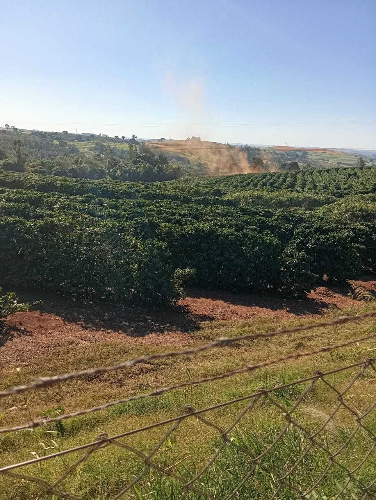

Bem-vindo à cidade do café☕
Mandaguari, a encantadora cidade do café!
Localizada no norte do Paraná.

Um local de fascinantes tradições cafeeiras que continuam a ser eternizadas.
NOSSA HISTÓRIA

Com uma história rica em produção de café, destaca-se nacionalmente na qualidade de seus grãos.
PRODUTOS LOCAIS